The feel
Overgrown ruins show something man-made being slowly overtaken by nature.1 Early in work on The Last of Us, Naughty Dog's artists gravitated towards "beautiful decay" and "nature reclaiming the Earth": they allowed for moments of darkness and fear, but as far as possible wanted the awe and mystery that come with that sight.1 NieR:Automata used fewer enemies than its studio was used to, so players could take their time and enjoy the still beauty of its desolate world.2
Its pull is beauty with danger in it: in The Last of Us, overgrown Bill's Town gives players time to breathe, and as lead cinematic animator Bryant Wilson puts it, "This is what freedom looks like now. It's dangerous, but it has this beauty to it".3 Ninja Theory projected Enslaved 150 years ahead and decided that nature would thrive rather than leave a barren wasteland, a setting the studio called "beautiful yet deadly".4
- reclaimed
- sunlit
- quiet
- damp
- patient
- after people
- green on grey
Where it comes from
Hubert Robert, nicknamed "Robert of the Ruins" by Diderot,5 painted the Louvre's Grande Galerie as an imaginary ruin in 1796,6 and Thomas Cole ended The Course of Empire with Desolation (1836), in which nature slowly reclaims the empire's ruins.7 Miyazaki's Laputa: Castle in the Sky (1986) imagined a half-ruined city whose gardens are still tended by robots.8 In games, Naughty Dog's artists gravitated towards "nature reclaiming the Earth" early in work on The Last of Us,1 Ninja Theory drew on the TV show Life After People for Enslaved,4 and NieR:Automata put a ruined metropolis overgrown with plants at the centre of its world.2
Core elements
Buildings reclaimed by plants
The subject is something people made, slowly overtaken by nature.1 NieR:Automata's City Ruins were designed so that players would want to take in the sights of a crumbling city being reclaimed.2 At Ta Prohm, kapok and other tropical trees hold the carved temple in their grasp, and it is hard to tell which is supporting the other.9
Lush, thriving growth
Ninja Theory reasoned that 150 years on, nature would thrive as it did before people instead of leaving a barren wasteland, and the studio's art was about injecting colour and light into its scenes.4 For The Last of Us Season 2, the filmmakers wanted Seattle's vegetation more lush and green than Boston's in the first season, to suit its rainy climate.10
Natural light through foliage
For The Last of Us, the art team set out to bring out the beauty of natural lighting once nature takes over society,3 down to the way light bounces and reflects through leaves.1 Bill's Town is lit warm, with the sunset shining through nature and the buildings.3
A sense of awe
Darkness and fear can have their moments, but Naughty Dog's artists wanted as much awe and mystery as possible.1 Thomas Cole planned Desolation to have "a calm & silent effect", and its ruined fragments carry a melancholy beauty.7
Age of the overgrowth
Decide how long people have been gone. Ninja Theory projected Enslaved 150 years ahead,4 while DNEG's work on The Last of Us meant adding 20 years of overgrowth to a city.10 On bare rock, lichens and mosses arrive first, and it takes them hundreds of years to make soil that grasses can grow in.11
Wildlife in the ruins
Cole planned Desolation with no human figure, and in the painting a bird nests on a column while deer roam free.7 He left the skeleton in his study out of the painting in favour of woodland animals, apparently to mute human tragedy and stress the beauty of nature's return.7 Shaddy Safadi's Broken Overpass painting for The Last of Us ended up with deer.1
How to do it
Block out the scene first
Jonas Axelsson started his overgrown temple as a quick blockout, moved rough meshes into the engine to get the scale right, and did a quick lighting pass early.12 For NieR:Automata, Kazuma Koda painted the abandoned city's concept art over a screenshot of the unfinished level, as a guide for the team modelling the environments.13
Model the decay from water and roots
In Alan Weisman's account, water is the first and last enemy: it gets in at the weak points of a roof until the roof falls in, then through broken windows, while ice breaks up the pavement and weeds run riot with no one to cut them back.14 Leave fallen stone in piles, with roots snaking through what still stands, as at Ta Prohm.9
Layer moss on top of the stone
Axelsson blended moss into each material by world direction, a world-aligned blend, so that a layer of moss always sits on top whichever way a rock is turned, which let him reuse one rock just by rotating it.12 He vertex-painted a more worn stone around cracks and damage, and covered the rocks in small plants to give the moss volume.12
Plant where roots could hold
On old stone walls, plants grow at the base, where there is more moisture and nutrients, in joints where the mortar has broken down into fine rubble, and along the top.15 Thin walls under 30 cm are rarely colonised, and nor are walls laid without mortar, unless they hold back soil that supplies moisture.15
Grow ivy from a point
Grow ivy procedurally over the mesh from a starting point you pick on it, such as a vertex at the foot of a wall, then adjust the settings and generate it.16 For The Last of Us Season 2, DNEG generated all its ivy procedurally, scattered the ground plants and trees the same way, and added wind simulations to match the plants moving in the filmed plates.10
Simulate years of growth
Let a procedural foliage simulation grow and spread plants over simulated years: in one documented example, 3 steps grow and spread trees for three years from an initial seed density of 0.25 with a maximum age of 20, and a second species is allowed to grow in shade.17 Mark the spaces that must stay clear with blocking volumes, so nothing spawns inside them.17
Light it with direct sun
Axelsson's main light is a directional light shining down from the cave ceiling, with volumetric fog and a sky light for a blue ambient base; versions without direct sun looked flat and lost colour.12 Naughty Dog gave Bill's Town a warm sunset through nature and buildings, and the plant-free quarantine zone a bluish, overcast light.3
Cheat sheet
- Growth sits
- Damp wall base, crumbling joints, wall tops15
- Stays bare
- Walls under 30 cm thick, or laid without mortar15
- First arrivals
- Lichens and mosses, then grasses11
- Moss
- World-aligned blend, always on top12
- Growth sim
- 3 yearly steps, seed density 0.25, maximum age 2017
- Light
- Sun from above, sky-light fill, volumetric fog12
Do
- Take the plants out where people still rule. Naughty Dog stripped the trees and grass from the Boston QZ so it would feel sterile and man-made.3
- Keep people small against the ruin. Shaddy Safadi found showing Joel and Ellie at a small scale the most compelling choice.1
- Fill the air with drifting particles. NieR:Automata uses tens of thousands of them to convey calm.2
- Match the plants to the climate. DNEG added the ferns and conifers of the Pacific Northwest for rainy Seattle.10
Avoid
- Going dark and creepy. Kazuma Koda brightened his first, much darker painting of NieR:Automata's abandoned city because it did not match the game,13 and Axelsson worked to keep his ruin from looking too dark and creepy.12
- Spreading growth evenly. On old walls, plants gather at the damp base, in crumbling joints and along the tops.15
- Letting the building vanish. Axelsson's grey temple was hard to make out under vegetation and moss until he made it bigger and red.12
- Cutting the direct sun. Axelsson's versions without it looked flat and lost colour.12
- Making it a postcard. For the HBO series, production designer John Paino played with Ellie's sense of awe but "didn't want to make it too beautiful".18
Tools and tutorials
- Blender: IvyGen
Bundled with Blender, it grows ivy over a mesh from the 3D cursor. A quick first pass for walls.16
- Unreal Engine: Procedural Content Generation
Try it for scattering weeds and saplings by rule along a ruin's ledges and cracks.
- Unreal Engine: Procedural Foliage Tool
Seeds species and lets them grow and spread over simulated years.17
- The creation of NieR:Automata's concept art
Concept artist Kazuma Koda on painting from an early screen grab to catch the right mood.
Palette
Sampled from The Last of Us Part I, Laputa, Cole's Desolation and NieR:Automata, and laid out here as soil strata. Each slab on this page shows one stage of succession, from lichen at the top to forest at the bottom.
Feel the vibe
In motion
Listen
From NieR:Automata's City Ruins, a ruined metropolis overgrown with plant life. Okabe aimed to keep the music simple but listenable.2
YouTubeFrom Laputa, whose half-ruined city still has gardens tended by robots.8
YouTubeFrom Shadow of the Colossus. Play it over a slow reveal of an empty landscape.
YouTubeSantaolalla chose his ronroco, a small Andean instrument, for this theme, and works with what he calls an eloquent silence.19
YouTubeTry it under a long walk past ruins on open hills.
YouTubeJapanese ambient from 1986. Yoshimura hoped it would convey the comfortable scenery of the natural cycle.20
YouTube
More references
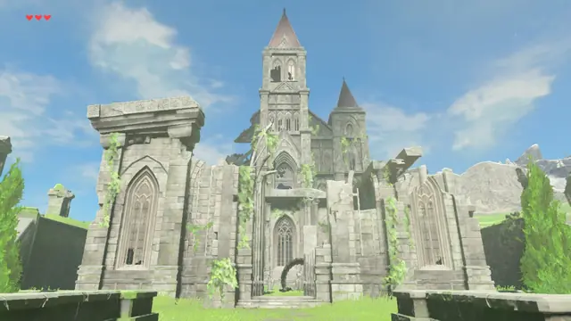
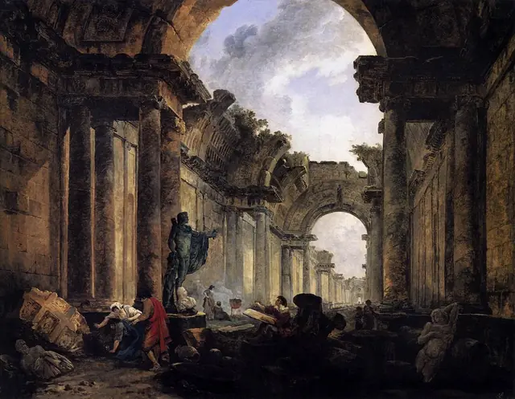
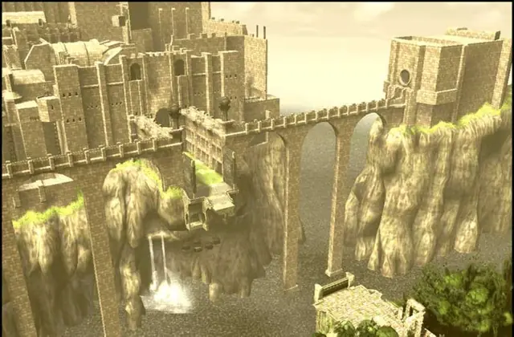
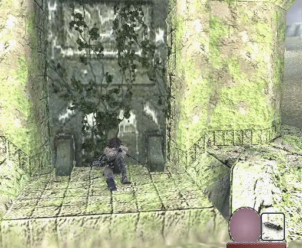
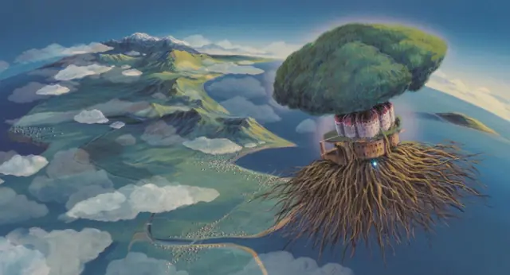
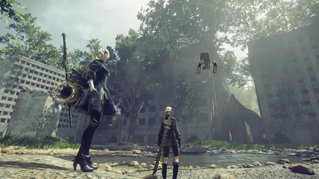
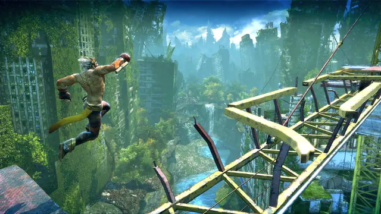
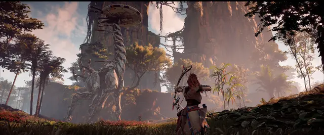
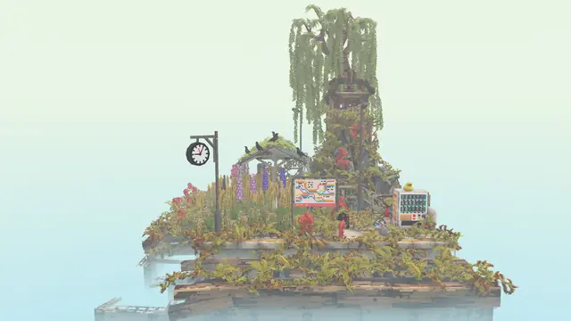
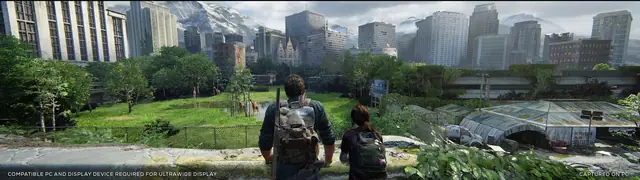
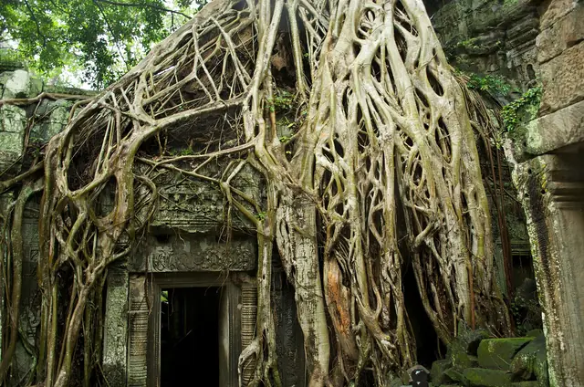
Games
- ICO
Study the warm haze over its empty castle by the sea.
- Shadow of the Colossus
Huge stone, moss and silence. Note how far the world goes with so little in it.
- Enslaved: Odyssey to the West
New York 150 years on, with nature thriving instead of a barren wasteland.4
- The Last of Us Part I
The 2013 game remade. Compare the plant-free Boston QZ with overgrown Bill's Town.3
- NieR:Automata
Its City Ruins, a ruined metropolis overgrown with plants, sits at the centre of the world.2
- The Legend of Zelda: Breath of the Wild
Climb a hill and study how its ruins read as landmarks.
- Horizon Zero Dawn
Study its rusted towers under forest, with a whole culture living on top.
- Cloud Gardens
Grow plants over small ruined dioramas. The style as a toy.
Film, art and more
- The Course of Empire
The series ends with Desolation: ruins, a vine-covered column and no human figure.7
- Hubert Robert
Nicknamed "Robert of the Ruins" by Diderot,5 he painted the Louvre's Grande Galerie as an imaginary ruin in 1796.6
- Laputa: Castle in the Sky
A half-ruined city whose gardens are still tended by robots, around a giant tree that broke through its dome.8
- The World Without Us
Alan Weisman imagines the world if people suddenly disappeared, down to how a house falls apart once water gets in.14
- Ecological succession
How life takes over bare rock: lichens and mosses first, then grasses and other plants.11 This page is laid out on it.
- Ta Prohm
Long left untouched to show where building meets nature, with tree roots snaking through the stones.9
Sources
- 1Into The Pixel 2012: PlayStation Artists Honored
- 2Meet PlatinumGames' NieR:Automata team! Part 2
- 3The Last of Us Developers, HBO Creators on Building the World Around Joel and Ellie
- 4The making of Enslaved: Odyssey to the West
- 5Exhibition: Hubert Robert, 1733–1808
- 6Vue imaginaire de la Grande Galerie du Louvre en ruine
- 7The Course of Empire: Desolation
- 8Laputa: Castle in the Sky (1986)
- 9The Archaeological Survey of India pledges to restore Ta Prohm temples
- 10How DNEG Built Seattle and Decayed It 25 Years for The Last of Us Season 2
- 11Ecological succession
- 12Creating a Lost Temple in UE4
- 13Meet PlatinumGames' NieR:Automata team!
- 14The World Without Us
- 15Flora and vegetation of stony walls in East Bohemia (Czech Republic)
- 16Ivy Gen
- 17Procedural Foliage Tool
- 18The Last of Us Production Designer John Paino on Building a World in Ruins
- 19How Gustavo Santaolalla and his ronroco took the film industry by storm
- 20Hiroshi Yoshimura: GREEN